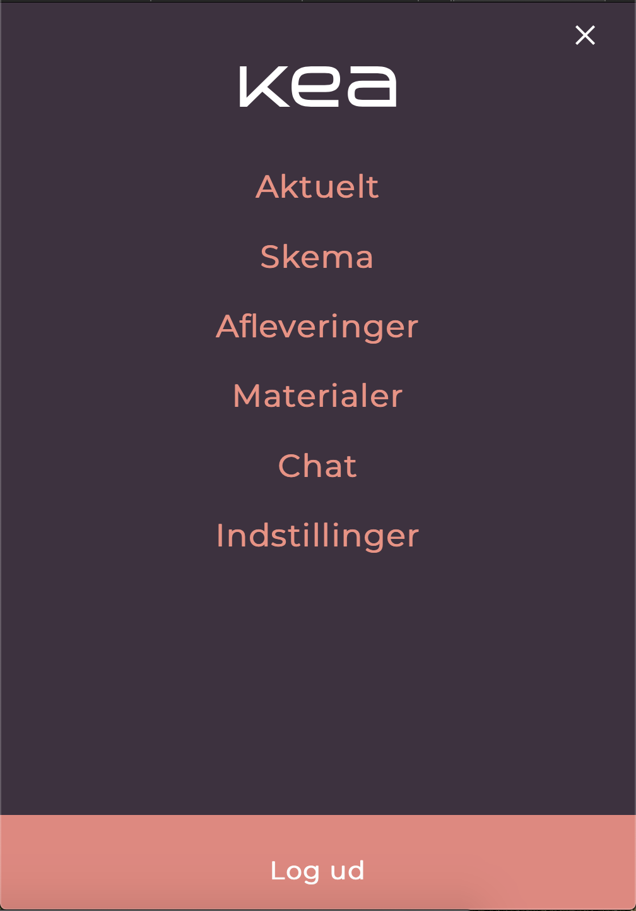
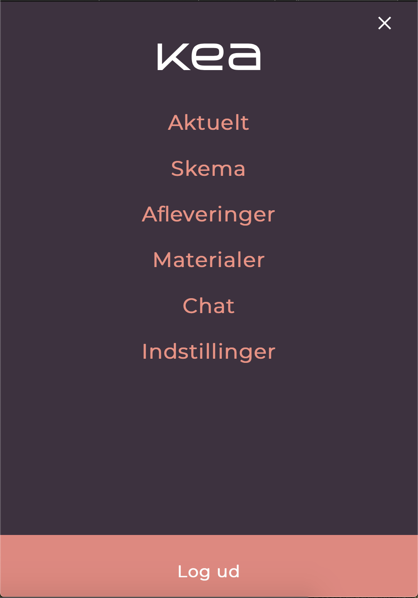

04.01.01 - Design Sprint - Opgavebeskrivelse
I dette forløb blev vi præsenteret for design sprint som en arbejdsform. Vi startede med at arbejde hele klassen sammen om at finde long term goal, sprint questions og udarbejde et map. Dette var en lidt langsomelig process da vi var så mange om det men det var en kæmpe hjælp senere da vi skulle gøre det i mindre grupper. Derefter skulle vi lave de forskellige sketch faser og dem lavede vi individuelt med undtagelse af lightning demoen den lavede vi fælles. Efter dette bliver alle skitser hængt op anonymt og der bliver sat prikker og stickers op med spørgsmål ved de forskellige. Der bliver derefter stemt i flere runder indtil der kun er få tilbage. Herefter blev vi delt op i små grupper hvor vi skulle vælge hvilken af skitserne vi ville arbejde ud fra. Her fik alle en stemme men i sidste ende kunne decideren gå ind og bestemme hvilken det skulle være.
Design sprints dokumentationen kan ses her.Jeg skulle arbejde i adobe XD for at udarbejde en prototype ud fra det resultat vi var kommet frem til i vores gruppe. Dette var en udfordring da det var første gang i XD og jeg kan godt se at det ikke var et særlig vellykket resultat. Tilslut lavede jeg en tænkhøjt test på 4 forskellige testpersoner. Denne viste at jeg manglede nogle vigtige ting som jeg godt kan se efter det er blevet nævn.


04.02.01 - Opgavebeskrivelse - Web prototype
I dette projekt fik vi udleveret et design af en web prototype af fronter, som vi skulle kode fra bunden. Jeg kom i mål med det meste men fik ikke alle media queries på så sitet virker ikke helt i alle skærmstørrelser. Jeg lavede også en lighthouse test på sitet hvor jeg godt kunne se at der var nogle problemer, jeg følte dog ikke at jeg havde den påkrævet viden til at rette op på problemerne.
Dokumentation til Web Prototype ses her. 

04.03.01 - Opgavebeskrivelse - Design Sprint: Native App
I denne opgave skulle vi lave en Nativ App og samtidig køre vores eget design sprint i gruppen. Vi fandt en problem som hed at vi syntes der var for mange forskellige grupper på facebook man skulle være medlem af for at følge med i hvilke events der var på KEA, derfor ville vi samle det i en app. Dette tjekkede vi selvfølgelig med de andre fra holdet ved at sende et lille spørgeskema ud. Og derefter blev vi bekræftede i at det var et generelt problem.
Vi fulgte design sprintet punkt efter punkt og fandt hurtigt ud af at det var en hurtiger og mere spændene process end vi først troede. Vi valgte at lave vores app med et lidt anderlede udseende og gå lidt væk fra de farver og fonte der er blevet brugt i de to andre opgaver. Dette gjorde vi fordi vi følte at den ville blive mere attraktiv og iøjnefaldende.
I dette projekt lavede vi også en afsluttende tænkhøjt test og fik en masse positiv feedback, dog var der nogle få ting som vi skulle tage op til overvejelse fx. En kalender funktion og en tilbage knap.
Dokumentation ses her.